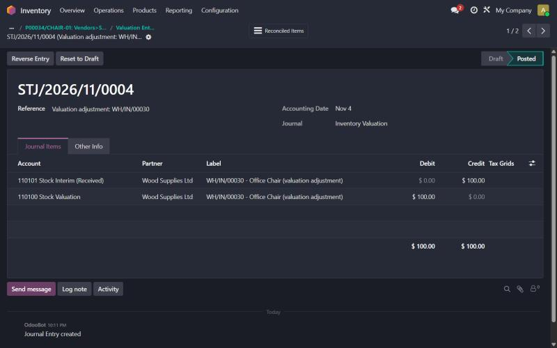
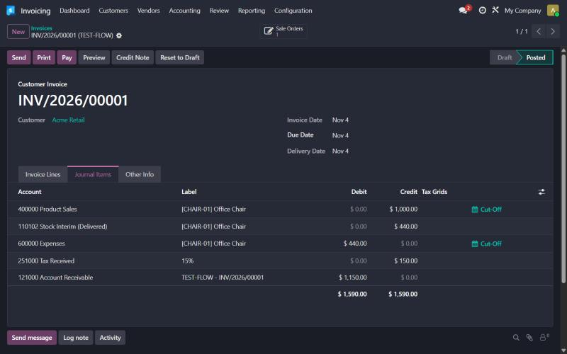
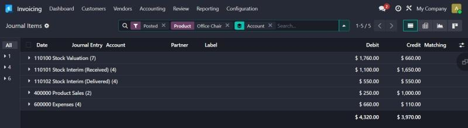
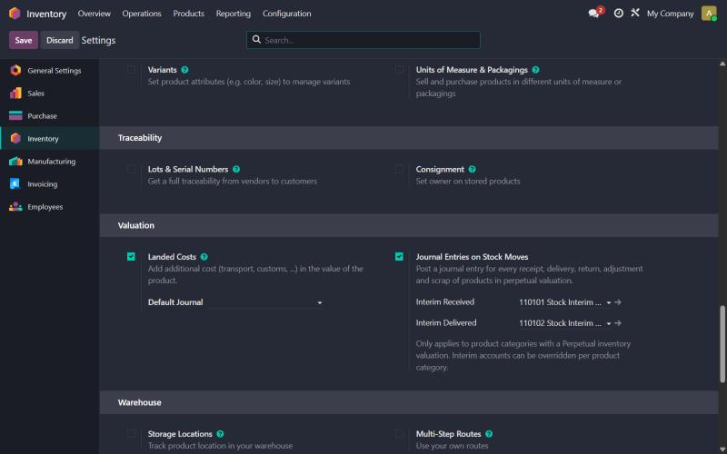
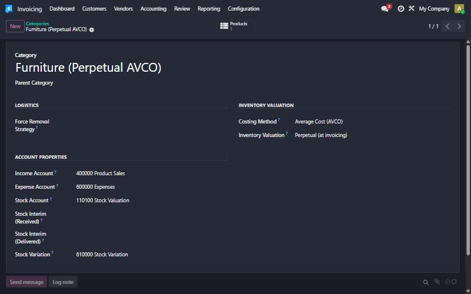
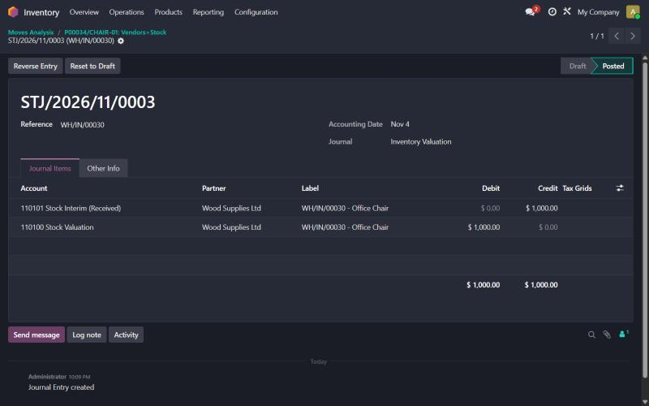
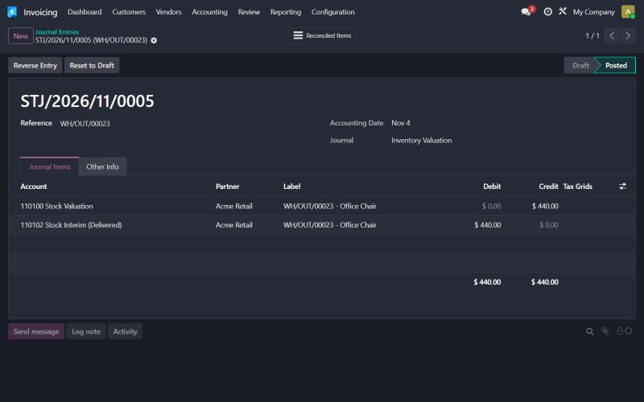
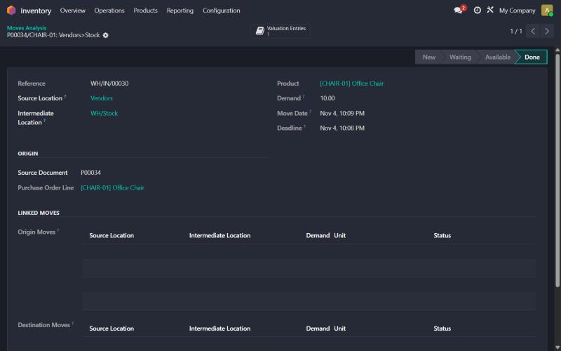
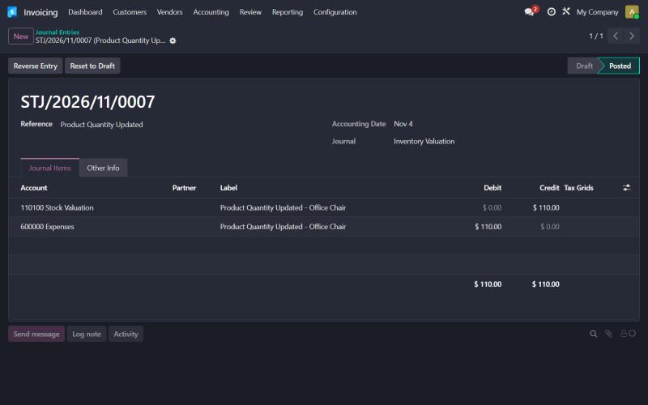

Odoo 19 · Inventory · Accounting
Automated Journal Entries for Inventory Operations
Every receipt, delivery, return, stock count and scrap of your perpetual-valuation products posts its own journal entry. Vendor bills and customer invoices clear the matching interim accounts automatically, so your Stock Valuation account always equals the value of the goods on hand.
Receipt of 10 units @ 100
| Stock Valuation | Dr 1,000.00 |
| Stock Interim (Received) | Cr 1,000.00 |
Posted automatically when the receipt is validated, then matched with the vendor bill.
Odoo 19 no longer posts a journal entry when goods move. With perpetual valuation the stock account only changes when bills and invoices are posted:
The classic perpetual (anglo-saxon) flow, restored with two interim accounts:
Built on Odoo 19's own valuation engine. No core changes, no new models.
📦
Receipts, deliveries, customer and vendor returns, inventory adjustments, scrap and manufacturing. FIFO, Average Cost and Standard Price.
🔗
Interim lines are matched with bills, invoices, credit notes and refunds. What stays open is a real difference to follow up.
⚖️
A bill at another price revalues the goods still in stock; the part already sold goes to the price difference account.
📅
Adjustments are dated on the stock move date and respect lock dates. The Inventory Valuation closing has nothing to correct, and accruals never duplicate the interim balances.
🛡️
One initial entry per stock move, guaranteed by a tracking flag, a row lock and a database unique index. Landed costs are booked once.
🏢
Switch and interim accounts per company, overrides per product category. Warehouse users need no accounting rights.
For storable products in categories with Inventory Valuation = Perpetual.
| Operation | Odoo 19 standard | With Stock Accounting Automation |
|---|---|---|
| Receipt from vendor | No entry | Dr Stock Valuation / Cr Stock Interim (Received) |
| Vendor bill | Dr Stock Valuation / Cr Payable | Dr Stock Interim (Received) / Cr Payable |
| Delivery to customer | No entry | Dr Stock Interim (Delivered) / Cr Stock Valuation |
| Customer invoice (COGS) | Dr Expense / Cr Stock Valuation | Dr Expense / Cr Stock Interim (Delivered) |
| Customer return | No entry until the credit note | Dr Stock Valuation / Cr Stock Interim (Delivered) |
| Return to vendor | No entry until the refund | Dr Stock Interim (Received) / Cr Stock Valuation |
| Inventory count, scrap | Only if the location has an account | Location account, otherwise Expense vs Stock Valuation |
| Production (Manufacturing) | Only if the location has an account | Components and finished goods against the production location account, otherwise expense |
| Cost change, Adjust Valuation | Left to the periodic closing | Stock Valuation vs Stock Variation for the quantity on hand |
| Landed costs | Landed-cost entry | Unchanged: booked once, never added to the receipt a second time |
Purchase

Bill at 110 instead of 100: the receipt is revalued by 100.
Sales

Customer invoice: cost of goods sold credited to Stock Interim (Delivered).
Valuation

10 chairs on hand at 110 = 1,100 on Stock Valuation; 550 received, not billed.
Ready after installation: the interim accounts are created for each company and the feature is switched on.
Inventory › Configuration › Settings › Valuation › Journal Entries on Stock Moves, per company, with the default Interim Received and Interim Delivered accounts.

Inventory › Configuration › Product Categories: Inventory Valuation = Perpetual. Interim accounts can be overridden per category; leave them empty to use the company defaults.

| Account | Where | Needed |
|---|---|---|
| Stock Valuation | Product category › Stock Account | Required |
| Expense (COGS) | Product or product category | Required: cost of goods sold, counts, scrap |
| Stock Interim (Received / Delivered) | Inventory settings, optional override per category | Created at installation |
| Price Difference | Product category | Required for Standard Price, recommended otherwise |
| Stock Variation | On the Stock Valuation account | Recommended: cost changes, Adjust Valuation |
| Location valuation account | Inventory adjustment, scrap, production locations | Optional: keeps losses or WIP out of expense |

Receipt entry, posted when the receipt is validated.

Delivery entry: stock credited, Stock Interim (Delivered) debited.

Every valued stock move gets a Valuation Entries button.

Inventory count difference booked against expense.
| Odoo | 19.0, Community and Enterprise |
| Depends on | Inventory valuation (stock_account), Purchase Stock, Sale Stock |
| Optional | Landed Costs, Manufacturing |
| Scope | Storable products in Perpetual valuation categories; FIFO, Average Cost, Standard Price |